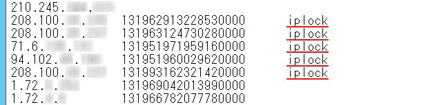

〔新機能〕POP3接続時の「IPロックアウト機能」について updated! 【基本機能と仕様】 POP3接続時の「IPロックアウト機能」は、レジストリ設定でキーを設定します。 POP3接続時に "IPLockOutSPTime" で設定される一定の時間（サンプリング間隔）の間に "IPLockOut" で設定される設定回数以上の連続接続に対し、"IPLockOutTime" で設定されたロックアウト時間の間、接続を拒絶します。POP3接続時に特定の同一IPアドレスからの接続回数が設定された回数に達したとき、接続元IPアドレスと接続時間情報（シリアル値）をプログラムインストールフォルダ内に自動生成される "rejectpopip.dat" ファイルにテーブル情報として追記で記録します。右端に表記される "iplock" "rejectpopip.dat" ファイルはプログラムインストールフォルダ（既定値 C:\Program Files\EPOST\MS\）内に自動生成されます。設定ファイル "rejectpopip.dat" はメールサーバ管理者がダイレクトにメモ帳などのエディタで開いてください。"IPLockOutTime" で設定されたロックアウト期間＝接続拒絶期間の間、EPSTPOP3Sサービスは該当IPアドレスからの接続を一切拒絶し、接続時に強制切断します。これにより認証までに至らないPOP3接続のDDos攻撃に対して強力な威力を発揮します。 "IPLockOutTime" で設定されたロックアウト期間＝接続拒絶期間をすぎると、自動的に再度接続が可能となります。再び "IPLockOutSPTime" で設定される一定時間（サンプリング間隔）の間に "IPLockOut" で設定される設定回数以上の連続接続があると、再度テーブル情報に記録、同様の拒絶動作が繰り返されます。 メールサーバ管理者が "rejectpopip.dat" ファイルを編集し、記録された接続時間情報（シリアル値）部分をカット、接続元IPアドレスだけを残すと、該当IPアドレスからの接続は、永続的に拒絶されます。
メールサーバ管理者が "rejectpopip.dat" ファイルを編集し、記録された接続元IPアドレスおよび接続時間情報（シリアル値）部分を行ごと削除すれば、該当IPアドレスからの接続はリセット扱いされます。
メールサーバ管理者が "rejectpopip.dat" ファイルを編集し、接続を許可したい接続元IPアドレスを "true" 指定する方法で該当IPアドレスからの接続を永続的に許可するようになります。 【設定方法】 IPロックアウト機能を使用するには、下記のレジストリ設定で機能が有効に働くようになります。EPSTPOP3Sサービスを停止します。 ［POP3接続時の「IPロックアウト機能」のレジストリ設定］ HKEY_LOCAL_MACHINE
IPLockOut は指定時間内でのIP毎の同時接続可能数を意味します。任意回数（例・10[回]とか30[回]など）をDWORD値（10進）で設定します。 設定が終わったらEPSTPOP3Sサービスを再開します。
IPロックアウト機能で拒絶された情報は、"C:\Program Files\EPOST\MS\rejectpopip.dat"内に次の順で記載されテーブル情報の形でデータ蓄積されます。"iplock" 接続元IPアドレス[TAB] 接続時間情報（シリアル値）[TAB] iplock
データは蓄積されていく一方ですので、ある程度日数が経過した古いテーブル情報は削除する、同一IPアドレスからの接続は一つにまとめシリアル値部分をカットすることにより永続的拒絶とするなど、システム管理者が定期的に手動で整理する必要があります。 このPOP3接続時の「IPロックアウト機能」を使うには、20190606差分以降の最新差分アップデートを適用してください。[64bit版] [32bit版]
（関連FAQ） 〔新機能〕POP3認証時の「認証接続ロックアウト機能」について